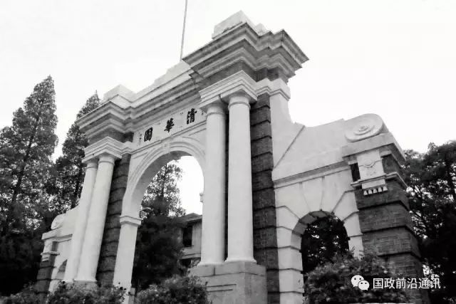

收录于合集


翟大宇 清华大学国际关系学系博士生
2017年12月28日，教育部公布了全国第四轮学科评估结果，清华大学政治学学科被并评为A- 级别，紧随北京大学、复旦大学和中国人民大学之后。而在2017年9月20 日教育部、财政部、国家发改委联合发布的“双一流”建设名单中，清华大学的政治学学科与北京大学、中国人民大学、复旦大学、华中师范大学、外交学院（自定）的政治学学科一道进入了政治学“一流学科”建设的行列当中。
在中国政治学界，历来是由北京大学、复旦大学和中国人民大学引领发展，此次学科评估北京大学和复旦大学继续扮演“领头羊”的角色，被评为A+级别，中国人民大学则回落到A级别，与北大和复旦拉开了一个档次。清华大学在2011年学科评估中与东北师范大学、苏州大学、武汉大学并列第11名，超过了山东大学、中国政法大学、云南大学，与吉林大学、南开大学、华中师范大学共同进入A- 级别，处于并列第四的位置，上升速度和势头令人瞩目。无论在“双一流”建设中，还是在学科评估中，“清华政治学”现象值得进行深入的思考和讨论。
150多年前，法国思想家托克维尔在《论美国民主》“绪论”中的一个醒目位置说：“一个全新的社会，要有一门新的政治科学。”在中国特色社会主义进入新时代后，必然要求建立与之相适应的新政治学。中国是一个有着五千年文明史的政治大国，历来不乏政治思维，甚至是一个早熟的政治文明。然而，新政治学的发展却是晚近以来的事情。我国的现代政治学学科兴起于近代西学东渐的过程中，新中国建立前在100多所大学中有40余所大学设立了政治学系。新中国成立后，受到政治革命的影响，在院系调整中政治学作为一门学科被正式取消。直到1964年，出于加强国际问题研究的需要，北大、人大、复旦被比准设立国际政治系，分别研究民族解放运动、国际共产主义运动和欧美资本主义国家政治，由此形成了中国政治学学科传统的“三驾马车”格局。直到改革开放后全面恢复政治学学科建制，传统三强仍然长期位居学科排名的前三甲。而清华大学政治学系作为后起之秀，已经逐步追近与传统三强的距离，跻身学科第一集团的行列。
清华政治学有着悠久的历史，在建国前一直是学校的发展重点之一。作为中国最早开展政治学教学和研究的高校之一，清华政治学学科对中国政治学的发展产生过重要影响，培养了一批著名的政治家和学者，比如张奚若、钱端升、萧公权、浦薛凤、王化成、陈之迈、沈乃正等政治学大家。新中国成立后，在院系调整过程中清华大学成为工科特色强校，政治学学科发展进入了断档期。在逐步恢复和发展为综合性大学的过程中，清华大学于1997年成立国际问题研究所，2007年组建国际关系学系，2010年建立清华大学当代国际关系研究院（2015年更名为清华大学国际关系研究院）；另一方面，2000年清华大学政治学系恢复建制，2009年政治学系全面重组。目前，在学科带头人阎学通的带领下，清华政治学以国际关系学系、政治学系学科群的形式存在于社会科学学院之下，经过十余年的发展，迅速成长为可以比肩传统政治学强校的一流学科。
作为政治学的后来者，清华政治学强调突出中国问题、天下情怀和科学方法三个特点，以国际问题研究和本土政治概念为核心，极为强调文理渗透、兼容并蓄、博采众长，在重视学习和借鉴国内外其他一流院校经验的同时，注重发展和完善清华特色，逐步形成了“小而精、特而强”的学科优势和发展特色。具体来看，清华政治学之崛起主要得益于其国际化、本土化、科学化的特色发展路径。
国际化：通过构建高端国际化的学术交流平台、形成国际水准的科研成果、构建具有全球视野的人才培养体系，建设高度国际化的、具有国际影响力的政治学学科。在国际化学术平台建设方面，世界和平论坛是全球大学主办的唯一一个国际安全高级别论坛，已连续举办多届；主办的英文学术期刊Chinese Journal of International Politics是目前国内唯以被SSCI收录的中国政治学/国际关系学期刊。在成果的国际影响力方面，阎学通教授的道义现实主义理论及相关研究产生广泛的国际影响，2015年以来连续三年进入爱思唯尔中国高被引学者榜单；庞珣、孟天广等教师在国际顶级期刊Political Analysis、International Organization上发表多篇重要论文，产生了较大学术影响力；2012-2016年，清华政治学学科共发表SSCI文章15篇，人均产出位于国内兄弟高校第一。在国际化人才培养方面，清华国关创立的发展中国家研究博士项目特别重视中国与发展中国家大学的教育教学合作，在相关发展中国家中产生了重要影响；自2011年起，设立中国政治与外交英文硕士项目，至今来自世界70多个国家的200多名学生进入该项目学习；与美国约翰•霍普金斯大学高级国际问题研究院（SAIS）共建的全球政治与经济双硕士项目，突出中美青年一代合作共同面对全球问题；与乔治城大学探索建立全球治理双硕士项目，已经达成合作协议；在本科大类中新增国际事务与全球治理方向的本科培养项目，大力提升学生跨文化的协作能力和国际胜任力；同时还设立了全球治理兼修硕士项目、全球治理能力提升项目和国际组织人才培养“地平线”实践项目。无论是科学研究，还是人才培养，清华政治学学科都实现了扎实推进，取得突出的成就。
本土化：在强调国际化的同时，清华政治学也十分重视扎根中国大地，服务中国特色的治国理政，重视发掘本土政治学的丰富营养，着力解决中国面临的政治学问题，立足于中国政治土壤，推动本土理论创新，在政治学理论、大国崛起、国际安全和外交学等领域均取得了重要突破。阎学通教授重视挖掘中国古代国际政治思想，扎根中国实践提出具有世界意义的国际关系理论，他提出的“道义现实主义”是这方面的杰出代表，在国内外学界产生了重大影响，已成为中国本土国际关系理论创新的重要代表。近年来，清华大学重视中国政治学学科建设，从2012年起，连续五年举办政治学学科建设年会，李慎明、王浦劬、徐勇、王缉思、秦亚青、钟杨、陈志敏、陈岳、杨光斌、周光辉、张贤明、张桂林、蔡拓、张凤阳、肖滨、吴志成等国内政治学名家先后出席年会，为清华政治学出谋划策，指引方向。清华还连续十多年举办国际关系方法论培训班、政治学与国际关系学术共同体，创办的国际关系理论创新研讨班，成为国内政治学和国际关系理论创新的重镇。此外，张小劲教授倡导的中国政治文本研究、景跃进教授推动的中国乡土政治研究，赵可金教授的中国外交和公共外交研究、何茂春教授的中国经济外交、李彬教授的中国军备控制和国际安全研究、孙学峰教授的中国崛起研究等，也都是立足中国政治和国际关系实践做出的本土理论研究，受到学界广泛认可。扎根中国大地，推进本根研究，是清华政治学学科不断释放强劲活力的源头活水。
科学化：通过发挥清华大学文理渗透的学科优势，坚持科学研究方法，注重实证研究和定量研究，初步形成了国际关系研究的清华路径（Tsinghua Approach）。在阎学通教授带领下，清华政治学高举科学方法和实证研究的大旗，在国内外都产生了很大影响。在庞珣教授主持下，大国关系定量数据库日趋成熟，清华大学计算社会科学平台、国际关系计算与数据实验室、政治学量化分析研究所等科学化研究平台建设进展顺利，教育部教指委委托清华举办政治学方法论培训班，国际关系研究方法讲习班已连续举办多年并承担过教育部高校政治学方法论讲习班，受到国内高校教师的广泛好评。主办的中文期刊《国际政治科学》成为CSSCI来源期刊，倡导国际关系实证研究，率先采用严格的同行匿名评审，被国内学界视为国际关系顶级期刊之一。目前，清华特色的科学化政治学研究已得到广泛认可，走在了中国政治学定量研究的前列并获得了很高的国际影响力。
思路通，路路通。正是国际化、本土化、科学化的发展路径和“小而精、特而强”的发展理念使得清华政治学一级学科从一个后起之秀迅速脱颖而出最终跻身一流学科行列，清华政治学学科的成长在一定程度上是“清华路径”的成功。然而，与清华政治学和国际关系在学科建设领域的强劲势头相比，清华政治学学科与传统的政治学强校相比仍有差距。
从发展规模来看，北大、复旦和人大的师资规模在80人左右，人才培养规模都在上千人，是“大而全”的“集团军”，而清华国际关系学系和政治学系加在一起也不足30人，各层次学生不足300人，是“小而精”的“突击队”，差距仍然十分明显。
从学科布局来看，北大、复旦和人大基本上采取全面布局的做法，涉及了政治学学科的几乎所有二级学科，而且还有强大的重点基地、研究平台和学科资源支撑。而清华的学科布局仅仅在国际关系、比较政治、中国政治和政治学理论与方法等有限的方向布局，没有任何部委研究基地和创新平台，学科资源也十分有限。
从机构支撑来看，北大、复旦和人大基本上要么单独建立国际关系学院，要么同时设立国际关系学院、政府管理学院或国际问题研究院，可谓是机构健全，兵强马壮。清华大学设立的国际关系学系和政治学系一直没有强大学院支撑，隶属于社会科学学院，该学院有社会学、政治学、理论经济学、心理学、科技史、科技哲学等众多学科，此次学科评估，社会学和政治学均被评为A- 级别已经是竭尽全力了。因此，虽然通过特色化、高质量的学科建设清华政治学实现了跨越式发展，但在继续追近传统强校的过程中，清华政治学必然会面临规模与体制“瓶颈”的制约。
就本次学科评估的结果来看，清华大学与北京大学以21个A+学科并列领跑。在人文社会科学领域清华大学的管理科学与工程、工商管理、公共管理、马克思主义理论、设计学5个学科获评A+。不难看出，这5个学科背后都有独立的学院作为支撑，在学科建设和教学、科研的组织管理上具有很大的优势。清华政治学学科要取得进一步发展、真正走在中国政治学最前列，成立独立的学院作为政治学学科发展的载体势在必行。要想将政治学和社会学两个A- 级别的学科提升到A或者A+，不成立两个强大的学院在学科建设上整合资源是办不到的。
展望未来，清华大学应以此次政治学学科进入“双一流”和A类学科为契机，整合校内政治学教学、研究力量和资源，探索建立类似于“国际事务学院”的独立学院作为政治学一级学科的支撑载体，为清华政治学立足国内一流、向世界一流发展搭建更高的平台，创造更广阔的空间，已经是迫在眉睫。
来源：中国网
编辑：晞哲